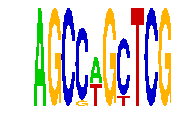

family_12 |
|---|
|  |
| Download PWM |
| Download instances (motifs) |
| Show motif distribution |
Query_ID | Query_Consensus | Subject_Name | Source_DB | Subject_ID | Length | Orientation | Offset | Divergence | Overlap | Subject_Consensus |
|---|---|---|---|---|---|---|---|---|---|---|
| family_12 | AGCCAGCTCG | PAX5 | HOCOMOCO | PAX5_HUMAN.H10MO.S | 8 | reverse-complement | -4 | 0.766 | 4 | GGCTGAGN |
Sequence | Start_position (from start) | Start_position (from end) | Average conservation | Best conservation score | Instance_with_best_CS | Best_Z-score | Instance_with_best_ZS | Strand |
|---|---|---|---|---|---|---|---|---|
| chr3:136388077-136389077 | 323 | 333 | 0.1513 | 0.562 | AGCCWGYTCG | 16.767763 | AGCSWGCTCG | 1 |
| chr8:35033934-35034934 | 953 | 963 | 0.0013 | 0.004 | AGCSWGCTCG | 16.767763 | AGCCWGYTCG | 1 |
| chr14:61697423-61698423 | 180 | 190 | 0.0046 | 0.011 | AGCCWGYTCG | 16.767763 | AGCCWGYTCG | 1 |
| chr10:92723866-92724866 | 356 | 366 | 0.08 | 0.118 | AGCCWGYTCG | 16.767763 | AGCSWGCTCG | -1 |
| chr11:57644654-57645654 | 725 | 735 | 0.0052 | 0.026 | AGCCWGYTCG | 16.767763 | AGCCWGYTCG | -1 |
| chr9:48426346-48427346 | 42 | 52 | 0.0093 | 0.013 | AGCCWGYTCG | 16.767763 | AGCSWGCTCG | 1 |
| chr18:69682831-69683831 | 194 | 204 | 0.0011 | 0.004 | AGCCWGYTCG | 16.767763 | AGCSWGCTCG | 1 |
| chr4:9569468-9570468 | 821 | 831 | 0.0023 | 0.01 | AGCSWGCTCG | 16.767763 | AGCCWGYTCG | 1 |
| chr8:90933165-90934165 | 843 | 853 | 0.2138 | 0.664 | AGCCWGYTCG | 16.767763 | AGCSWGCTCG | 1 |
| chr4:65267832-65268832 | 810 | 820 | 0.0006 | 0.003 | AGCSWGCTCG | 16.767763 | AGCSWGCTCG | 1 |
| chr11:74339883-74340883 | 700 | 710 | 0.004 | 0.008 | AGCCWGYTCG | 16.767763 | AGCSWGCTCG | 1 |
| chr6:91745635-91746635 | 715 | 725 | 0.5845 | 0.999 | AGCCWGYTCG | 16.767763 | AGCSWGCTCG | 1 |
| chr4:55294133-55295133 | 492 | 502 | NA | NA | AGCCWGYTCG | 16.767763 | AGCSWGCTCG | 1 |